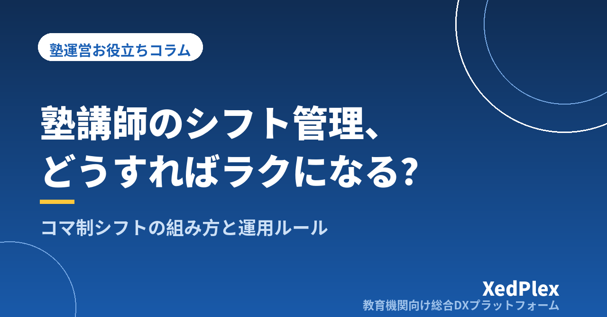

塾講師のシフト管理をラクにする方法｜コマ制シフトの組み方と失敗しない運用ルール

塾のシフト管理は、飲食店やコンビニのシフトとは質が違います。1コマ単位で組む、担当できる科目と学年が講師ごとに違う、生徒との相性や継続性を考える必要がある、そして生徒側の欠席・振替でシフト自体が動く——。この「変数の多さ」が、塾長の毎月の頭痛の種になります。
講師が2〜3人のうちは頭の中で組めますが、5人を超えたあたりから「希望を集める→組む→調整する→周知する」の各段階で漏れが出始めます。この記事では、小規模塾のシフト管理が破綻しやすいポイントと、作成を楽にする段取り、勤怠管理との連動までを整理します。
LINEでの希望収集が破綻する理由
多くの塾が、講師グループLINEでシフト希望を集めています。手軽な反面、これは構造的に破綻しやすい方法です。
- 出し忘れが見えない：誰が未提出かを塾長が数えて催促することになる
- 情報が流れる：あとから「〇日は出られません」と送られたメッセージが、他の連絡に埋もれる
- 変更の履歴が残らない：「言った・言わない」がシフトでも起きる
- 集めたあとの転記が手作業：トークからエクセルへ写す作業がまるごと塾長の仕事になる
つまりLINE収集の問題は「集めること」ではなく、集めた情報がそのまま使える形になっていないことにあります。フォームや表への直接記入など、「講師が書いた瞬間に一覧になっている」方法に変えるだけで、転記と催促の手間が大きく減ります。
シフト作成を楽にする3つの段取り
1. 「固定シフト＋変動枠」に分ける
毎月ゼロからシフトを組むのはやめて、基本は固定、変動する部分だけ毎月調整する形にします。大学生講師でも「毎週火・金の19時以降は固定」のような約束にしておけば、毎月集めるのは例外（テスト期間・帰省など）だけで済みます。担当生徒の継続性という指導面のメリットも大きい方法です。
2. 締切と確定日を固定する
「毎月15日までに翌月の希望提出、20日にシフト確定」のようにサイクルを固定します。締切が毎月変わると、講師も出し忘れます。確定後の変更は「自分で代わりを探す」「塾長に相談」などルールを明文化しておくと、確定後の崩れが減ります。
3. 講師ごとの「担当できる条件」を一覧にしておく
科目・学年・個別/集団の別・生徒との相性——シフトを組むときに塾長の頭の中にある条件を、一覧表にして外に出しておきます。これがあると、急な欠勤時に「誰なら代われるか」が即座にわかり、塾長不在時でも他のスタッフが調整できるようになります。
生徒側の変動とどう付き合うか
塾のシフトが特殊なのは、講師の都合だけでなく生徒の欠席・振替でコマが動くことです。個別指導では、生徒1人の振替が講師のシフト変更に直結します。ここで大事なのは、シフト表と生徒の予定表を別々に管理しないことです。
勤怠管理との連動も忘れずに
シフトは「予定」、勤怠は「実績」です。給与計算はシフト表ではなく実績で行う必要があるため、コマの追加・欠勤・振替が給与に正しく反映される流れを作っておきましょう。シフト表から手で拾って給与計算する運用は、講師が増えるほど計算ミスと確認の手間が増えます。出勤の記録が自動で残り、月末に実績を集計できる仕組みがあると、給与まわりの信頼性が大きく上がります。
システム化する場合の見きわめ
シフト管理の単機能アプリは世の中にたくさんありますが、塾の場合は前述のとおり「生徒のコマ・振替」と切り離せないため、汎用シフトアプリだけでは半分しか解決しないことが多いです。検討するなら、生徒の予定・欠席振替・講師の勤怠までを一緒に扱える、塾向けの仕組みを軸に比較するのがおすすめです。判断基準はシステム選びの記事で紹介した「使う機能だけに払う」「売上に対して無理のない費用」「移行が軽い」の3つがそのまま使えます。
まとめ
塾講師のシフト管理を楽にする鍵は、①希望収集を「書いた瞬間に一覧になる」形に変える、②固定シフト＋変動枠で毎月の調整量を減らす、③締切・確定・変更のルールを固定する、の3つです。そのうえで、講師のシフト・生徒のコマ・勤怠実績がバラバラに管理されている状態を解消できると、毎月のシフト業務は「組む仕事」から「確認する仕事」に変わります。塾長が授業と生徒に集中できる時間を取り戻すために、まずは希望収集の方法から見直してみてください。
この記事を書いた運営より
私たちは、個人経営・小規模の学習塾向けに、生徒管理・QRコードでの入退室記録・月次請求・保護者へのLINE/メール通知・AIによる学習支援までをひとつにまとめた教育機関向け総合DXプラットフォーム「XedPlex（ゼドプレックス）」を開発・提供しています。初期費用は0円、料金は生徒1名あたり月額300円（税込）から。生徒50名の塾なら月15,000円（税込）です。全国8つの教室で導入されており、導入塾には紹介ホームページの無料作成も行っています。機能の詳細説明はこちら。
XedPlexの詳細を見る